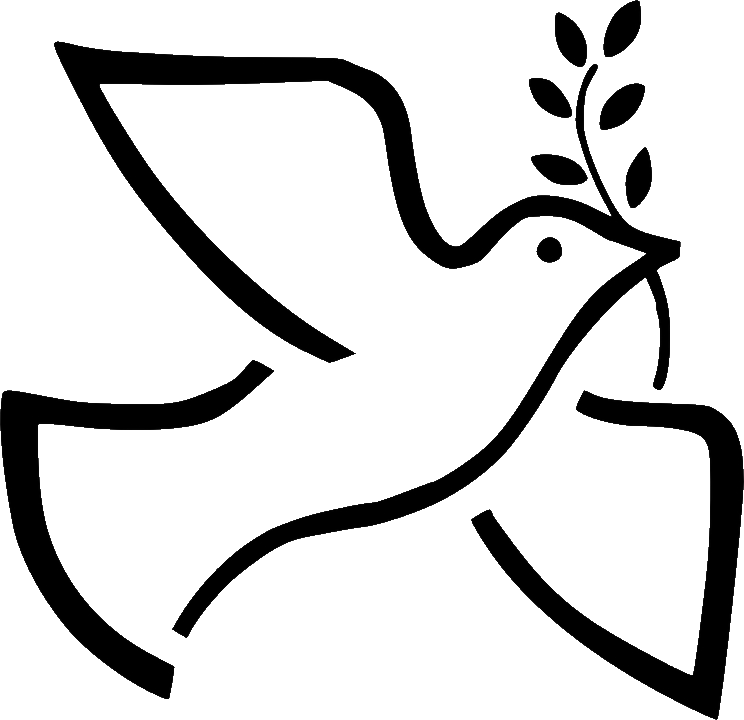

Sărbători împreună


Informare și consiliere - Oferirea de informații clare și validate științific despre boala oncologică, opțiunile terapeutice și terapiile complementare, precum și îndrumare specializată pentru aparținători.
Obținerea unei a doua opinii - Asistență în pregătirea și organizarea dosarului medical necesar evaluărilor suplimentare în centre specializate din țară sau din străinătate.
Recuperare și suport - Demersuri integrate de susținere fizică, psiho-emoțională și spirituală, orientate spre îmbunătățirea calității vieții persoanelor diagnosticate cu afecțiuni oncologice.
Înființare - Fondată din necesitatea reglementării și monitorizării terapiilor complementare utilizate în context oncologic, pentru a asigura integrarea acestora în mod responsabil și fundamentat științific.
Dezvoltare - Consiliere individuală și de grup, privind regimurile igieno-dietetice și terapiile de suport, seminarii și ateliere dedicate persoanelor cu diagnostic oncologic și familiilor acestora.
Extindere - Susținerea accesului la tratamente în afara țării, inclusiv prin mobilizarea de fonduri pentru persoane care necesitau intervenții medicale specializate indisponibile local.
Medic Oncolog / Fondator
Farmacist
Mișcare, echilibru și viață - Un loc dedicat persoanelor diagnosticate și familiilor lor, unde mișcarea adaptată, echilibrul emoțional și terapiile complementare devin parte din parcursul de îngrijire, încă din perioada tratamentului și după finalizarea acestuia.
Activități coordonate și adaptate individual - Exerciții fizice supravegheate, balneoterapie, psihoterapie, masaje terapeutice, terapii de grup (yoga, tai-chi, dans terapeutic), terapii individuale (auriculoacupunctură), precum și servicii pentru redobândirea stării de bine (sociocoafură, sociocosmetică).
Elaborarea de materiale informative - Publicarea de broșuri și cărți dedicate terapiilor complementare autorizate și utile în timpul și după tratamentele oncologice, pentru o informare corectă și responsabilă.
Fundația Renașterea - Parteneriat inițiat în 2009 pentru susținerea activităților Punctului de Informare din cadrul Institutului Oncologic București, dedicat regimului igieno-dietetic și terapiilor de suport în timpul și după tratamentele oncologice.
Asociația P.A.V.E.L. - Colaborare pentru sprijin informațional și psiho-social adresat copiilor și tinerilor diagnosticați cu cancer și familiilor acestora.
Patronatul Medicinei Integrative (P.M.I.) - Partener în proiectul european „Rețea multiregională pentru terapie integrativă, consiliere și reintegrare socială a persoanelor diagnosticate cu cancer” (2010-2013), cofinanțat din Fondul Social European, alături de un partener din Italia.
Informare online - Sesiuni dedicate regimului alimentar, terapiilor complementare și gestionării simptomelor în timpul și după tratamentele oncologice.
Formare online - Cursuri aplicate de dietoterapie, automasaj și psihoterapie.
Sprijin pentru a doua opinie oncologică - Facilitarea accesului la evaluări medicale în centre europene francofone de expertiză (Franța, Belgia, Elveția, Luxembourg) și orientare către terapii inovatoare indisponibile la nivel local.
Redirecționează 3.5% din impozitul pe venit - Poți susține activitatea Asociației Sfântul Nectarie fără costuri suplimentare, prin completarea formularului de redirecționare.
Sprijin direct pentru programe - Contribuția ta ajută la susținerea activităților de informare, consiliere și suport pentru persoanele diagnosticate cu afecțiuni oncologice și familiile acestora.
Implicare simplă - Este una dintre cele mai ușoare forme de sprijin, prin care poți contribui concret la continuitatea proiectelor asociației.
Susținere din partea companiilor - Firmele pot redirecționa 20% din impozitul pe profit pentru a sprijini activitățile și proiectele asociației.
Parteneriat cu impact - Prin această contribuție pot fi susținute programele de informare, recuperare, consiliere și integrare dedicate beneficiarilor.
Responsabilitate socială - Este o formă concretă prin care mediul de afaceri poate participa activ la îmbunătățirea calității vieții persoanelor aflate în tratament sau recuperare.
Ne dorim alături oameni dedicați care pot contribui prin competență profesională sau experiență personală. Asociația caută voluntari din rândul medicilor oncologi, psihologilor, preoților, nutriționiștilor, kinetoterapeuților, farmaciștilor, specialiștilor în terapii complementare și membrilor familiilor persoanelor cu diagnostic oncologic.
Te poți implica în activități de informare, susținere emoțională, consiliere, organizare de sesiuni tematice sau sprijin în cadrul programelor dedicate beneficiarilor.
Dacă poți contribui, te invităm să te implici și să devii parte din această comunitate de sprijin.
Adresă - București, România
Număr de contact - +40 000 000 000
Program - Luni-Vineri, în intervalul stabilit de asociație.
Disponibilitate - Pentru informații, orientare și sprijin privind activitățile asociației.
Scrie-ne - Poți folosi formularul de mai jos pentru întrebări generale, colaborări, implicare sau solicitări de informații.